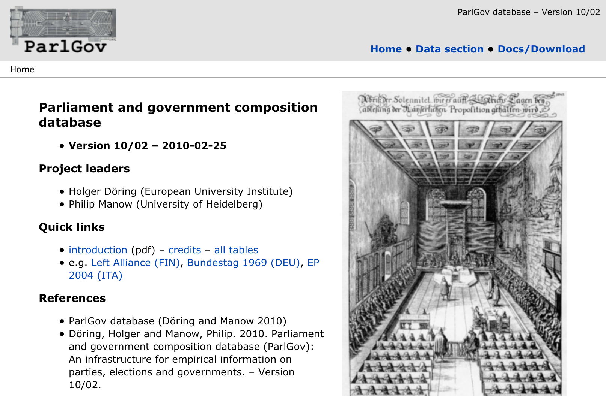

Project history · 👴🏼
This summary of ParlGov legacy describes the significant steps of the code evolution and summarizes its shortcomings. A public version of the website was accessible between 2010 and 2021.
History
The earliest Django version of ParlGov I found is from 2007. It was based on a SQLite database I created previously. I liked Django right away but was hesitant to tie the project to the framework fully. Hence, I initially implemented the Django web app as a "user interface" to the database and started hosting it on Webfaction. At the time, I did not follow the best practices recommended by Django but kept the focus on the database. It was also the time when I learned more advanced Python programming concepts through learning Django. This legacy is still visible in the code more than a decade later.
I completed and made public an initial version of the site in 2010. At the time, I updated and significantly improved the structure of the database and the models by using better table and variable names as well as by restructuring the database. This year, I also started using version control, Mercurial at the time, so that all changes since 2010 can be tracked. Before 2010, the web app required a login.
In 2014, I conducted a major refactoring of the codebase and added the Bootstrap CSS framework, which led to a significantly more professional website layout.
Even in 2015, I knew that the web app needed significant refactoring. Newer Django versions depreciated some approaches that the code relied on, Python 3 became mainstream, and there was too much outdated code.
Between 2015 and 2021, I could not find funding to implement a refactoring, and I was not in a position to do these updates myself. That is why the project code base stalled, although it was happily running online all those years. During this period, I added data validations, minor bug fixes, and minuscule enhancements.
In 2021, our web hosting provider, Webfaction, was closed, and ParlGov legacy was no longer publicly accessible. The main information about the project, news, and data were now provided with a static site at parlgov.org. At the time, I created a Docker configuration that allows to run the legacy version locally, and that has been used to create stable releases. Internally, we used web hosting at PythonAnywhere to run the legacy app and to update the data. The website was not publicly available due to performance and security issues.
In 2024, I reimplemented the main models, pages, and data checks in ParlGov web. The new implementation and the data import revealed some minor data issues that were fixed in ParlGov legacy before the stable release. A final stable release based on the legacy app was published in 2024.
Legacy issues
What are the primary dead ends in the code base that make a migration of ParlGov legacy without a reimplementation so challenging?
First, the database is not aligned with Django migrations. SQLite does not enforce data types. The original data was not added through Django and was edited manually, so that there are some inconsistencies in the database. Migrations were added to Django only in the early 2010s, and the apps' models can not be altered with Django migrations.
Second, the project has not been migrated to newer Django versions. Django introduced some new approaches and depreciated previous approaches. Some better best practices have evolved in the Django community, but none of them have been included in the code base.
Third, the entire project structure is opaque. In the early parts of the project, I ran into issues with circular imports, so I ended up implementing Django apps that are way too large.
Fourth, views and templates are too complex and too large to repair. They have evolved over the years, adding features without properly structuring or modernizing.
Fifth, no tests are included in the code base, so modifying and updating the app is risky and potentially error-prone.
Sixth, frontend technologies have evolved over the last decade. None of these tools, Bootstrap as an exception, is used in the app.
Nevertheless, I firmly believe that the models have stood the test of time. There are a few minor adjustments I would like to make, and many removals are needed. I am convinced that the major models are very robust and include a lot of valuable experience gained over the years.
Therefore, the new version is based on the models from the legacy app. All other code has been written from scratch, and this is not a "second system syndrome" but a hard-won insight.
